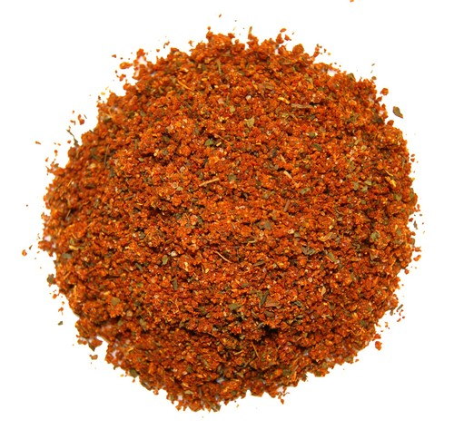
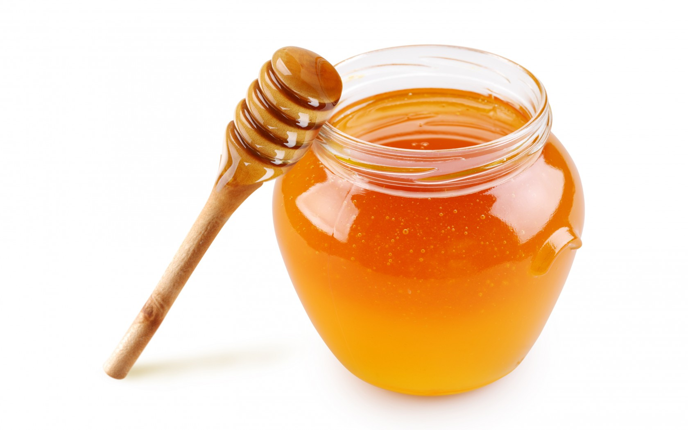
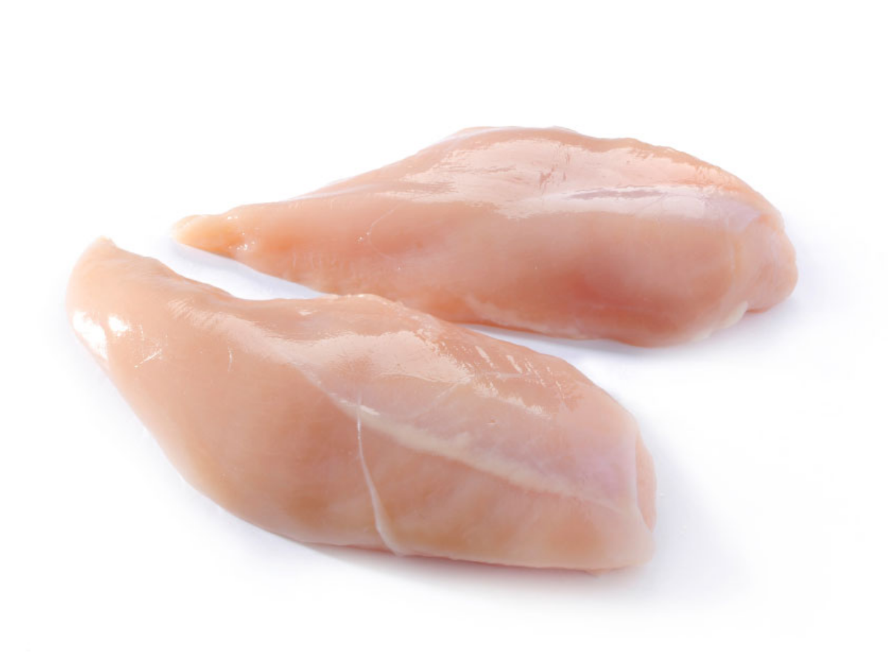

Cara Membuat Ayam Tandoori
Resep

- 1 ekor ayam (saya potong menjadi 8 bagian)
- 8 sdm yoghurt
- 2 sdm air jeruk nipis
- 4 sdm minyak goreng
- 1/4 sendok lada/merica bubuk
- secukupnya Garam dan penyedap rasa
- 1 sdm ketumbar bubuk
- 1 sdt kunyit
- 1/2 pala bubuk
- 1/4 sdt cengkeh bubuk
- 1 sdt garam masala
- 5 sdm saos tomat
- Bumbu Halus:
- 1 buah bawang bombay
- 6 siung bawang putih
- 3 siung bawang merah
- 1-2 cm jahe


Cara Membuat
- Semua bumbu dicampur bersama bumbu yang dihaluskan kedalam wadah. Masukkan yoghurt, minyak goreng, garam, lada dan perasan air jeruk nipis
- Lumuri bumbu sampai rata keseluruh permukaan ayam.
- Sisihkan beberapa jam. Akan lebih bagus jika didiamkan semalaman didalam kulkas agar bumbu meresap dalam daging ayam
- Jika ayam sudah didiamkan beberapa jam, bakar ayam diatas arang atau di alat pemanggang seperti happy call
- Bakar ayam sampai matang sempurnya. Jika dirasa cukup, angkat dan sajikan bersama nasi dan acar buah